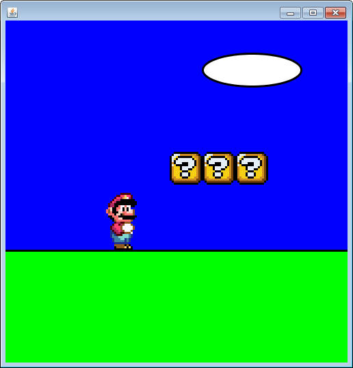
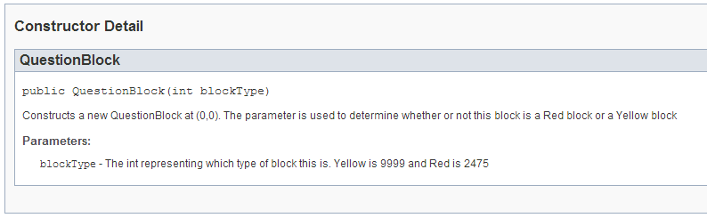
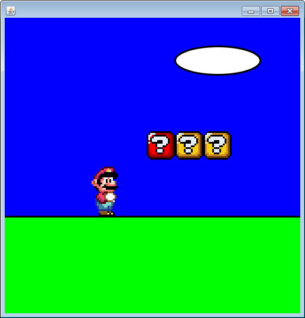
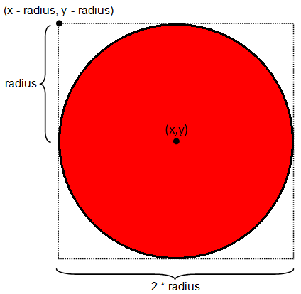
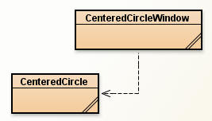
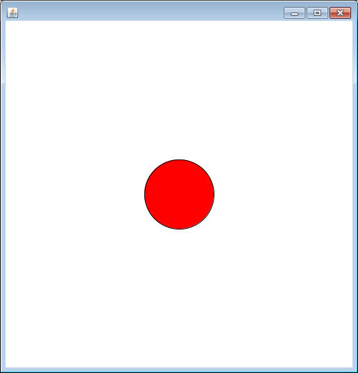

Enhancing SaccoObjects
Part 2: Public Constants and Timers
In the previous assignment you used some self drawing objects to create the scene below. This project will continue to modify that code.

Using Static Constants to Represent a State:
Previously we constructed a QuestionBlock using the default constructor (new QuestionBlock() ). The default QuestionBlock is yellow, but there is also a red QuestionBlock. The only way to control this by using a different constructor; one that takes in an int.

If you construct a QuestionBlock with an int as a parameter, the int represents what type of QuestionBlock you would like. Notice that 9999 is yellow, while 2475 is red.
Go to the QuestionBlockWindow constructor and change one of the QuestionBlock's construction statements from new QuestionBlock(); to new QuestionBlock(2475);

By constructing a QuestionBlock with a 2475 as a parameter, we've told it to be a red question block instead of a yellow!!
Yes, 2475 is arbitrary and forgettable. It would be a real pain to have to remember this random number on a regular basis. Fortunately, within the QuesionBlock class there are two constants that will be helpful.
public static final int RED_BLOCK = 2475;
public static final int YELLOW_BLOCK = 9999;
These constants are less about carrying a value that's useful in calculations and more about putting a variable name to a forgettable value
Since these values are public and static, we can use them in any other class to make them more readable. Remember that when using static elements, we call them using the class name instead of a variable (QuestionBlock.RED_BLOCK and QuestionBlock.YELLOW_BLOCK). We've seen this before with Math.PI and Math.E.
Head back to the QuestionBlockWindow's constructor and instead of new QuestionBlock(2475), use new QuestionBlock( QuestionBlock.RED_BLOCK );
Since QuestionBlock.RED_BLOCK is simply a variable holding the int 2475, this change will not change anything about how the code functions. It simply makes the code more readable. Remembering that QuestionBlock.RED_BLOCK represents the red question block is much easier to remember than 2475.
Using SaccoObject's Timer:
SaccoObject has a few methods that make your programs a little bit more fun. Already we've seen the paintWindow method, which is important for describing what the window will look like. Now let's take a look at SaccoObject's built in timer.
Go to your QuestionBlockWindow class and add the following method header:
public void onTimerTick()
This is another special method that is called incrementally if the SaccoObject has been "started".
inside the onTimerTick method, add one line of code:
myBlock.update();
Calling QuestionBlock's update method changes an instance field so that the displayed image is a different one. Since this is now hooked up with the timer, the image will be continually changing.
Go to your runner and change it to read:
public static void main()
{
QuestionBlockWindow myWindow = new QuestionBlockWindow();
myWindow.showWindow();
myWindow.setDelay(300);
myWindow.start();
}
The setDelay affects SaccoObject's built-in timer to wait .3 seconds between calls to onTimerTick. The timer defaults to off, so you must call the start method to kick off the action.
Run the program. Hopefully you will see the QuestionBlock do some animating.
Creating Your Own Self-Drawing Object
Create a class named CenteredCircle, which will have instance fields to represent an x, y, radius, and a maximum radius (all ints). Also, have a String to represent the color of the circle.
The Constructor for CenteredCircle should take in an x and y as parameters and assign them to the instance fields. The constructor should set the default radius to be 50, the color to red, and the maximum radius to 100.
Add the mutator methods setColor, setRadius and setMaxRadius.
PaintBrush
API
Add a method with the header public void
paintSelf(PaintBrush brush). Inside the method, use the PaintBrush object
to draw a circle that is centered around the x and y in your
instance fields. This means that you cannot simply say brush.fillOval(
x,y,...., you must first calculate the x and y that the circle should be drawn
from.

Creating a Window 
Create a second class named CircleWindow. This class is very similar to th QuestionBlockWindow, so have it open while coding. The only instance field should be a CenteredCircle. In the constructor, assign a CenteredCircle to the instance field and make sure that it has an x and y of (250,250).
In your paintWindow method, don't forget to call the paintSelf method of the CenteredCircle. Otherwise the object will exist, but not be drawn.
Run your program, make sure that the circle drawn is perfectly centered in the window (myWindow.showGrid() can be useful in determining this).

Adding a Timer effect:
Open your CenteredCircle class and add a new method named grow, which will take in no parameters, and make the circle's radius increase by 2.
Open your CenteredCircleWindow class and override the method onTimerTick, similar to the QuestionBlockWindow. Inside this method, call the instance field's grow method. Also, go to the runner and make sure that you've called the window's start method.
Run this program, a circle should start small and then grow beyond the edges of the window.
Cycling the circle's growth:
The grow method is useful for our animation, but it allows the radius to go well past the maximum radius. We can use a mod trick to keep the radius in a range that we like.
Look at the following table and look at the pattern that modding by 4 reveals
| num | num%4 |
| 0 | 0 |
| 1 | 1 |
| 2 | 2 |
| 3 | 3 |
| 4 | 0 |
| 5 | 1 |
| 6 | 2 |
| 7 | 3 |
| 8 | 0 |
| 9 | 1 |
| 10 | 2 |
Notice that when you mod by 4, the maximum possible value is 3. Going past 3 causes the result to loop back to 0.
In your grow method, after you increase your radius, mod it by the maximum radius and assign it back into the radius variable. This will make sure that the radius never goes past the maximum, it just loops back to 0.
Run your program and make sure that when the radius of the cricle grows too large, it jumps back to 0.
Assignment:
Modify your CenteredCircleWindow to have three CenteredCircles on the same window. A red one at (125,375) with a maximum radius of 60, a blue one at (250,250) with a maximum radius of 120, and another red one at (375,375) with a maximum radius of (60).